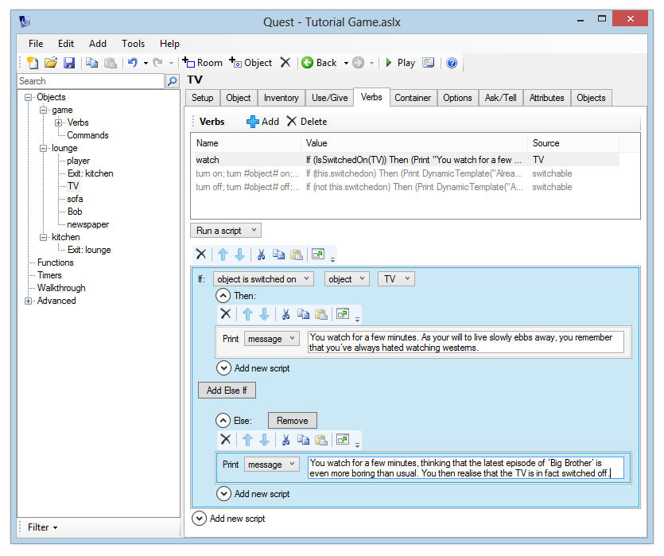

Blocks and scripts
Some script commands have blocks assciated with them, some functions have scripts. If the block or script has to wait for something, there is the potential for some confusing problems.
Script commands with blocks with no wait: if (else), for, foreach, firsttime (otherwise), switch (case), while
Script commands with blocks that wait: ask, on ready, show menu, wait
Functions with scripts that wait: Ask, ShowMenu, SetTimeout, SetTimeoutID, SetTurnTimeout, SetTurnTimeoutID
Script commands and blocks
A block is a section of code that is set apart from the main. In the GUI view, it will be indented to the right; in code view it is indented and further denoted by { and } at the start and end. There will be some sort of script command before it that controls it.
Probably the most common use is with the if script command. This example has two blocks:

In code it looks like this:
if (IsSwitchedOn(TV)) {
msg ("You watch for a few minutes. ...")
}
else {
msg ("The TV is not turned on.")
}
Script commands with blocks that wait
Note that blocks are non-blocking! That means Quest will continue with the rest of the code without waiting. This can lead to odd results when waiting for player input. Consider this example:
msg ("A man steps out of the door way. 'You wanna a cheap watch?'")
ask ("Buy dodgy watch?") {
if (result) {
msg ("'Sure, I'm sure they're full guaranteed, right.' You hand over $50, and get a Rolox watch in return.")
}
else {
msg ("'No!'")
}
}
msg ("You walk swiftly on.")
The player will be asked the question, but Quest will print “You walk swiftly on.” immediately, without waiting for the player to give a response.
The on ready script command is there specifically to ensure Quest waits for any outstanding block to end before running its own block.
Functions with scripts
So now we are considering the script for a function, a script within a script. This will look just like a block. In the GUI view, it will be indented to the right; in code view it is indented and further denoted by { and } at the start and end. There will be some sort of function before it that controls it.
options = Split("Red;Green;Blue;Yellow", ";")
ShowMenu ("What is your favourite colour?", options, false) {
switch (result) {
case ("Red") {
msg ("You must be very passionate. Or like a team that play in red.")
}
case ("Yellow") {
msg ("What a bright, cheerful colour!.")
}
case ("Green", "Blue") {
msg (result + "? Seriously?")
}
}
}
For the most part, scripts can be used just like blocks, but there are some difference that can trip you up.
Scripts are separate entities, and they can be passed around as things, similar to how numbers and strings are (you may already use them as attributes). You will probably never want to, but you could define your script first, and then call ShowMenu.
options = Split("Red;Green;Blue;Yellow", ";")
myscript => {
switch (result) {
case ("Red") {
msg ("You must be very passionate. Or like a team that play in red.")
}
case ("Yellow") {
msg ("What a bright, cheerful colour!.")
}
case ("Green", "Blue") {
msg (result + "? Seriously?")
}
}
}
ShowMenu ("What is your favourite colour?", options, false, myscript)
When Quest hits a ShowMenu, it displays the menu, and then it saves the script for later, assigning it as an attribute of the game object.
One consequence of this is that the on ready script command will not wait. It only waits until all blocks have completed; it has no way of knowing what scripts are waiting.
Perhaps a more important consequence is that local variables will not be available inside the script (while they are inside a block). You will not be able to use the this variable, nor will you be able to access parameters if this is inside a function, nor will you have access to object or text (or whatever) inside a command.
Let us suppose a Showmenu is inside a command, with the pattern “paint #object#”. The following code will fail; Quest will complain: “Unknown object or variable ‘object’.”
options = Split("Red;Green;Blue;Yellow", ";")
ShowMenu ("Paint " + GetDisplayAlias(object) + " what colour?", options, false) {
msg("You paint " + GetDisplayAlias(object) + " " + LCase(result) + ".")
object.colour = result
}
The way to get around this limitation is to set an attribute of the game object before the ShowMenu, and to access that inside the script.
options = Split("Red;Green;Blue;Yellow", ";")
game.objecttopaint = object
ShowMenu ("Paint " + GetDisplayAlias(object) + " what colour?", options, false) {
msg ("You paint " + GetDisplayAlias(game.objecttopaint) + " " + LCase(result) + ".")
game.objecttopaint.colour = result
}